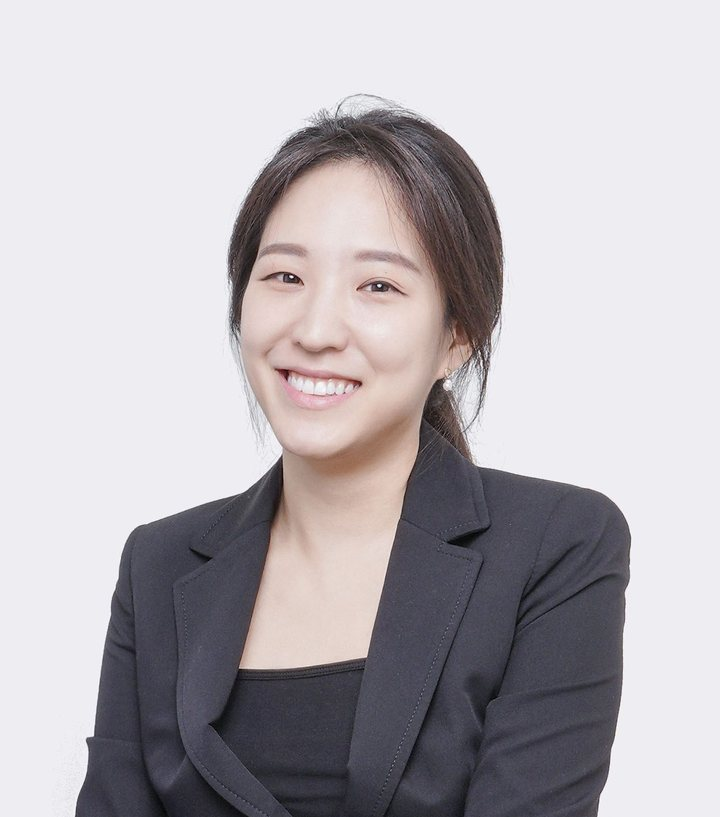

Group Leader, Imaging Intelligence Laboratory
Seung Ah Lee 이승아
Associate Professor
Department of Mechanical Engineering, Seoul National University
Biography
Seung Ah Lee is an Associate Professor of Mechanical Engineering at Seoul National University. She works on computational imaging: microscopes, cameras, and optical metrology and inspection systems whose optics and AI-based image reconstruction are designed together. She received her B.S. in Electrical Engineering and M.S. in Electrical and Computer Engineering from Seoul National University and her Ph.D. in Electrical Engineering from Caltech, and was a faculty member in Electrical and Electronic Engineering at Yonsei University (2018–2025).
Her Ph.D. work at Caltech (2014) was on chip-scale lensless microscopy. She was then a postdoctoral associate in the Department of Bioengineering at Stanford University and at Google X, and a scientist at Verily Life Sciences (2016–2018).
Her group's current work includes Fourier ptychographic and polarization microscopy, label-free virtual staining for pathology, lensless cameras with fabricated phase masks, rolling-shutter speckle imaging of blood flow, and optical inspection and metrology for semiconductors. She is an Associate Editor of Optics Express and Advanced Imaging, and received the Commendation of the Deputy Prime Minister and Minister of Science and ICT (Science Day 2026).
Her professional service includes General Chair of the Computational Optical Sensing and Imaging (COSI) conference at the Optica Imaging Congress (2024, 2025), Conference Co-chair at SPIE Photonics West (2024–2026) and Director of International Affairs of the Optical Society of Korea.
Research interests
- Computational imaging and microscopy
- Biophotonics and in vivo imaging
- AI for computational imaging and imaging-system design
- Low-cost imaging systems
Education
- 2014
Ph.D. in Electrical Engineering
California Institute of Technology (Caltech)
Advisor: Prof. Changhuei Yang
- 2009
M.S. in Electrical and Computer Engineering
Seoul National University
Advisor: Prof. Sunghoon Kwon
- 2007
B.S. in Electrical Engineering
Seoul National University
Appointments
- 2025–
Associate Professor
Department of Mechanical Engineering, Seoul National University
- 2023–2025
Associate Professor
School of Electrical and Electronic Engineering, Yonsei University
- 2018–2023
Assistant Professor
School of Electrical and Electronic Engineering, Yonsei University
- 2016–2018
Scientist
Verily Life Sciences (Alphabet Inc.)
- 2015–2016
Postdoctoral Associate
Google X
- 2014–2015
Postdoctoral Associate
Department of Bioengineering, Stanford University
Advisor: Prof. Ingmar H. Riedel-Kruse
Professional service
Editorial
Associate Editor
Optics Express (Optica Publishing Group)
2024–
Associate Editor
Advanced Imaging
2024–
Conference organization
Optica Imaging Congress
Computational Optical Sensing and Imaging (COSI): General Chair (2024, 2025), Program Chair (2023)
2023–2025
SPIE Photonics West
Computational Optical Imaging and Artificial Intelligence in Biomedical Sciences: Conference Co-chair
2024–2026
SPIE–OSK Advanced Biophotonics Conference
Technical Program Chair
2025
Societies and advisory roles
Director of International Affairs
Optical Society of Korea
2024–
Director of General Affairs
Optical Society of Korea
2023
Public Relations and Information Committee
Korean Biochip Society
2023, 2024
Scientific Advisory Board
Noul Co., Ltd.
2023–2024
Technical program committees
CLEO 2024; IEEE International Conference on Computational Photography 2023; IEEE/IEIE ICEIC 2023, 2024; OSK Advanced Biophotonics Conference 2022–2024; IEEE/IEIE ICCE-Asia 2020, 2021
Honors and awards
- 2026Commendation of the Deputy Prime Minister and Minister of Science and ICT (Science Day 2026)
- 2025Young Engineer's Award, Korean Society of Precision Engineering
- 2023Teaching Excellence Award, Yonsei University
- 2023LG Electronics Target Lab
- 2022Outstanding Article Award, Frontiers in Computer Science, for “Micro-HBI: Human-Biology Interaction With Living Cells, Viruses, and Molecules”
- 2018Microsoft Research Asia Collaborative Research Award
Contact
- seungahlee@snu.ac.kr
- Phone
- +82-2-880-7153
- Office
- Bldg. 301 Rm. 1503
- Laboratory
- Bldg. 302 Rm. 411A
- Address
- Department of Mechanical Engineering, Seoul National University, 1 Gwanak-ro, Gwanak-gu, Seoul 08826, Korea